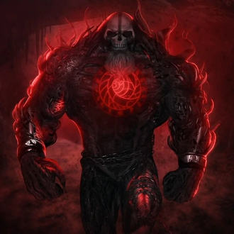

-
Deus Da Morte
Descrição
O Deus da Morte é o nome dado à Relíquia de Morte. Essa entidade de Morte com complemento de Conhecimento e Medo, também conhecida pelo nome Parasita de Dimensões, é a entidade que controla o Tempo e protege a Cronologia, capaz de se manifestar em vários lugares e várias formas ao mesmo tempo por meio de sua Distorção Temporal.